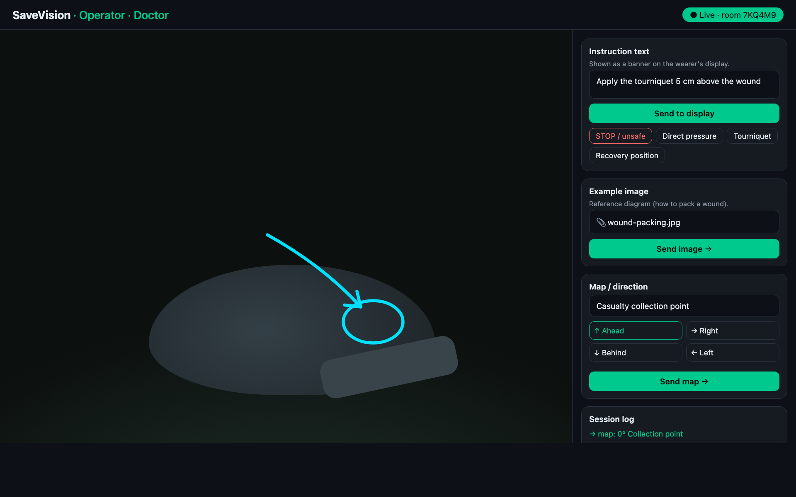
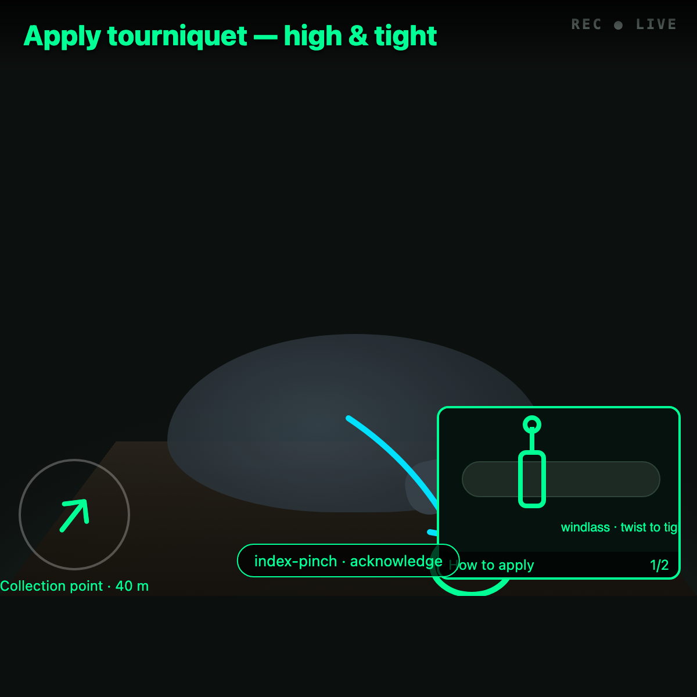
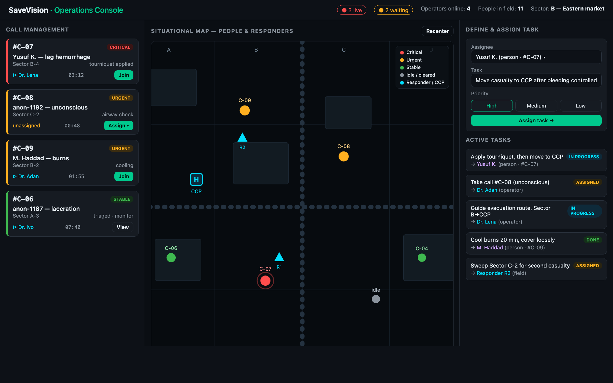

Remote Operator-Guided First Aid — Clinical Concept for Review
A licensed clinician, seeing through a bystander's glasses, coaches the simple non-invasive actions that decide survival in the first minutes of trauma. We are asking for your clinical review.
For clinician review · June 2026 · 7 pages
Notice. This is a concept document for clinical review — not medical advice and not a treatment protocol for use without a connected, licensed clinician. In the live system every operator must be a currently licensed clinician working within their scope; the on-scene civilian performs every physical action while the operator only guides. Real emergencies require professional EMS and evacuation as early as possible.
1. What SaveVision is
The problem. In trauma — especially in conflict — most preventable deaths happen in the first minutes, from causes a bystander could address: massive external haemorrhage and a lost airway. The scarce resource is rarely willing hands; it is trained judgment, which usually cannot arrive in time.
The idea. SaveVision lends that judgment over a wire. An untrained bystander wearing smart glasses streams their first-person view to a remote, licensed clinician who sees what they see and coaches them by voice and with lightweight visual overlays through simple, non-invasive lifesaving actions until EMS/evacuation arrives.
One-way by design. The clinician sends guidance (text, a freehand drawing on the live view, a reference image, a direction). The wearer only publishes their view; they do not send data back. The clinician decides, the bystander acts.
Where it fits. SaveVision is decision-support that augments, never replaces, professional emergency care and evacuation. Medical guidance is the first use; the same pipeline can later support evacuation, search & rescue, and other expert-guided tasks.
The system in use
Three views make up SaveVision: the clinician's console, what the bystander sees on the glasses, and the coordinator's triage console.

Clinician view. The live first-person view with freehand annotation (marking exactly where to act), a location mini-map, and one-tap guidance — instruction text, a reference image, or a direction.

What the bystander sees. An instruction banner, the clinician's drawing over their own view, a how-to diagram, and a direction marker — read hands-free on the display.

Coordinator console. Call triage by severity, a situational map of people and responders, and task assignment to people or operators.
2. Scope of guided care (MARCH)
Care is organised around the MARCH priorities and bounded strictly to what a layperson can safely perform under real-time coaching.
Step
Operator guidance
Bystander action
M — Massive haemorrhage
Identify the bleeding point; coach high-and-tight tourniquet, wound packing, and firm direct pressure; mark and note the time
Applies tourniquet / packs wound / holds pressure; does not loosen the tourniquet
A — Airway
Assess responsiveness/breathing; coach positioning or recovery position; protect a possible spinal injury when moving is unavoidable
Positions the casualty as directed
R — Respiration
Watch for worsening breathing / obvious chest wound; coach positioning within layperson limits
Reports what they see; repositions
C — Circulation
Recognise shock; keep casualty flat and still; reassess bleeding control
Keeps casualty flat, monitors
H — Hypothermia / Head
Coach covering and insulating (cold worsens bleeding); leave the tourniquet visible
Covers and insulates the casualty
The clinical boundary (deliberate and permanent)
SaveVision coaches non-invasive care only. It is not a remote operating theatre: no invasive procedures, no actions beyond what an untrained person can safely perform with coaching. When in doubt, the system de-escalates and prioritises getting the casualty to professional care.
3. What an operator may and may not send
Allowed
Prohibited / restricted
Step-by-step instructions within the operator's licence and scope
Anything beyond the operator's scope or that requires invasive skill
Instructions that endanger the bystander (e.g. entering an unsafe scene)
Freehand overlays, reference diagrams, a direction marker
Collection or relay of militarily useful information (positions, movements, targeting) — this protects the bystander's civilian status under IHL
Requests for what the bystander sees
Insecure transmission/recording of a casualty's identity
The wounded, and those caring for them, are protected under international humanitarian law. The channel is deliberately medical-only; that discipline is what lets a civilian wear these glasses into a conflict and remain, in fact and in law, a civilian. All media is end-to-end encrypted and metadata is minimised.
4. Limits, risks & what this is not
Not a substitute for EMS. It buys minutes and improves bystander action; arranged evacuation remains the goal.
Scene safety first. The first guidance is often "are you safe?" — the system tells the bystander to take cover or not intervene when the scene is unsafe.
Connectivity & power dependent. Degrades gracefully to audio-only and on-device offline checklists when networks fail.
Psychological load. An untrained person doing this is under extreme stress; the operator must support them, and outcomes are never guaranteed even with flawless guidance.
Do no harm. Bad guidance can injure; operators are vetted, licensed, and work within scope, and the system favours the conservative action.
Liability & consent. Operates within Good-Samaritan principles and informed consent; this is decision-support, not a clinician-patient relationship with the reader.
5. What we would like you to review
We are seeking your clinical judgement on the following before any pilot:
1. MARCH scoping. Is the layperson action column safe and correctly bounded? Anything we should remove or add?
2. Quick actions. The operator UI offers one-tap prompts (STOP/unsafe, Direct pressure, Tourniquet, Recovery position). Are these the right defaults, and is the wording safe?
3. Hard limits. What must never be guided to an untrained bystander, even by a clinician, over this medium?
4. Tourniquet coaching. Is our guidance (high & tight, mark the time, do not loosen, leave visible) complete and correct for lay application?
5. Failure & escalation. When should the system explicitly tell the bystander to stop and focus only on evacuation?
6. Operator credentialing. What vetting, scope limits, and supervision would you require for remote operators?
Disclaimers & glossary
This is a concept document and general emergency-guidance material — not individualised medical or legal advice, and it creates no clinician-patient relationship.
Every operator in the live system must be a currently licensed clinician acting within their scope; the bystander performs all physical actions.
SaveVision is decision-support that augments, never replaces, professional EMS and evacuation.
Clinical sequences are illustrative of how guided care is structured, not a protocol for unsupervised use.
All sessions are end-to-end encrypted; identifying and operationally sensitive information is minimised and protected.
Tactical Combat Casualty Care — the battlefield trauma framework MARCH derives from.
Tourniquet
A device applied tightly above a limb wound to stop life-threatening bleeding.
Golden hour / platinum ten minutes
The early window in which intervention most changes survival.
IHL
International Humanitarian Law — protects the wounded and those who care for them.
CASEVAC / CCP
Casualty evacuation / casualty collection point.
SaveVision — remote, expert-guided assistance on smart glasses. Medical guidance is the first feature. This document does not constitute medical or legal advice.